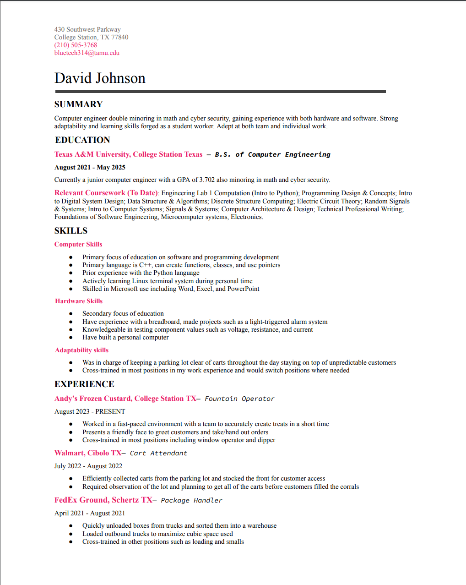

Qualifications
Interests
As a computer engineer, I am educated in both hardware and software. I am partial to the coding aspect and plan on pursuing it in my career. I am specializing in cyber security as well as image processing & graphics. I have a focus on backend development and logic, and this is my first front end project.
Skills Elaboration
- Coding
- I primarily use C++. I have experience using functions, classes, and dealing with the heap. I can operate the UNIX terminal. I have created server and client processes and am currently gaining experience with html and css.
- Circuits
- I have experince using a breadboard to create circuits. I have made a light based alarm system and calculators. I regularly used op-amps and tested the curcuit values such as voltage and current. I have simulated higher level circuits in Verilog such as a basic cpu.
- Adaptibility
- I am able to adapt to new positions easily and have practiced this skill often. Most jobs I have worked in had me on almost every position avalible so I had to learn and remember everything. Two of my jobs had me dealing with customers and their somewhat unpredictable natures while still being efficient. And Andy's regularly changes some named treats that I have to memorize and be able to make for customers.